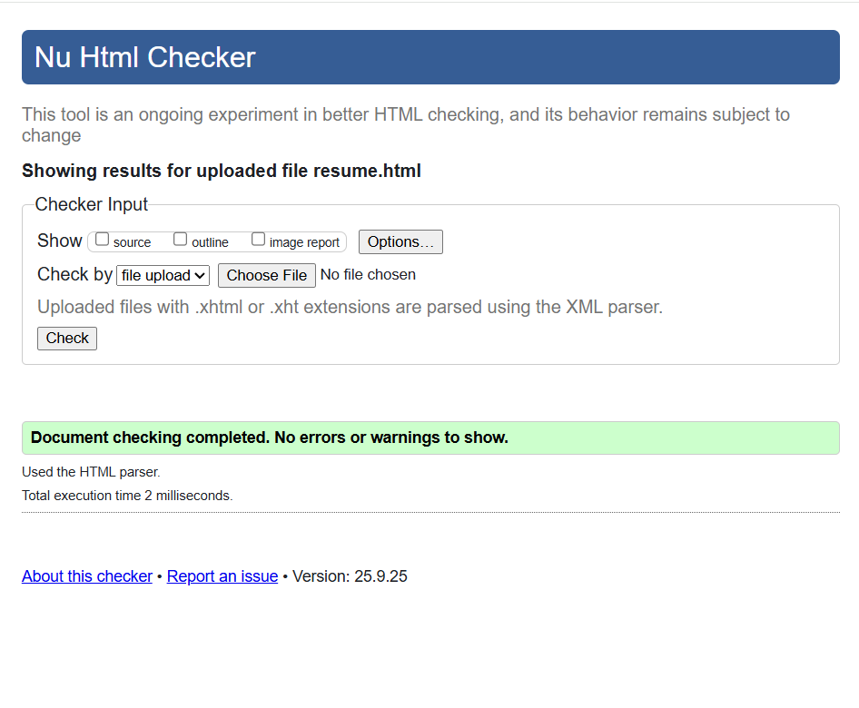

Beck Sanders
Email: bsanders4@hawk.illinoistech.edu
Phone: (843) 509-2327
Objective
To obtain a position in Cybersecurity where I can apply my skills in securing a network or device chain for companies and individuals.
Education
- Studying for a Bachelor of Science in Cybersecurity, Illinois Institute of Technology, 2029
Experience
- DW pools Aquatics and Security Head Gaurd – Dunes West Pool, 2 years
- Key responsibilities:
- I secured employee social media and digital accounts from security risks, and helped company employees configure their inbound and outbound connections, and briefed them on emails and what to do when a suspicious email or person is contacting you.
- Worked with BlueJ and repoScript, (Java coding platforms), to make a pool pH and gate security system. that required card access to open.
- Achieved a safer work environment online and in person preventing non-paying people and malicious online people from affecting the pool.
Skills
- Knowledgeable with HTML
- Fluent in Java
- Fluent in Python
- Team communication
Previous Job
HTML Validation
